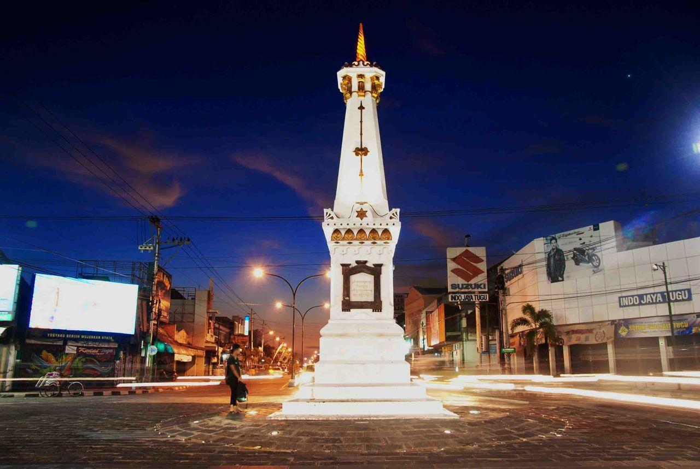
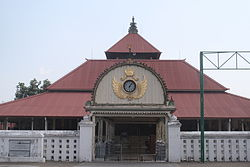
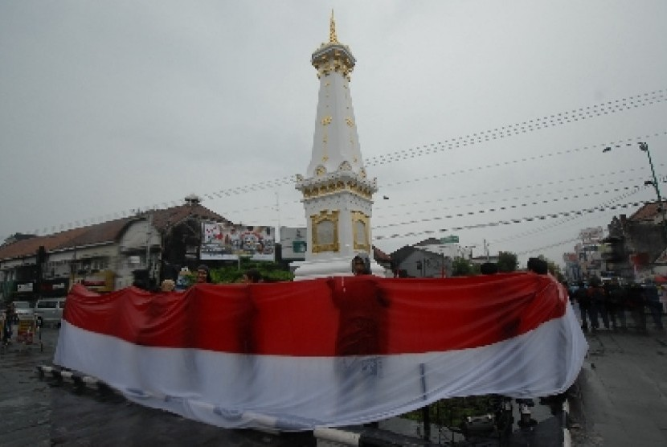

Yogyakarta

Kota Yogyakarta (bahasa Jawa: ꦪꦺꦴꦒꦾꦏꦂꦠ, translit. Ngayogyakarta, pengucapan bahasa Jawa: [kuʈɔ
ŋajogjɔˈkart̪ɔ]) atau dikenal oleh masyarakat setempat dengan nama Kota Jogja atau Kota Yogya adalah ibu kota
dan pusat pemerintahan Daerah Istimewa Yogyakarta, Indonesia. Kota ini adalah kota besar yang mempertahankan
konsep tradisional dan budaya Jawa. Kota Yogyakarta adalah kediaman bagi Sultan Hamengkubuwana dan Adipati
Paku Alam. Kota Yogyakarta merupakan salah satu kota terbesar di Indonesia dan kota terbesar keempat di
wilayah Pulau Jawa bagian selatan menurut jumlah penduduk. Kota Yogyakarta juga pernah menjadi ibu kota RI
pada tahun 1946.
Salah satu kecamatan di Yogyakarta, yaitu Kotagede pernah menjadi pusat Kesultanan Mataram antara kurun tahun
1575–1640. Keraton (Istana) yang masih berfungsi dalam arti yang sesungguhnya adalah Keraton Ngayogyakarta dan
Puro Paku Alaman, yang merupakan pecahan dari Kesultanan Mataram. Pada masa revolusi, Yogyakarta juga pernah
menjadi ibu kota Indonesia antara tahun 1946 hingga 1950.
Demografi

Jumlah penduduk kota Yogyakarta, berdasar Sensus Penduduk 2010[13]., berjumlah 388.088 jiwa, dengan proporsi
laki-laki dan perempuan yang hampir setara. Sementara tahun 2021 jumlah penduduk kota ini bertambah menjadi
415.509 jiwa dengan kepadatan 12.784 jiwa/km².[2]
Islam merupakan agama mayoritas yang dianut masyarakat kota Yogyakarta 83,40%, dengan jumlah penganut Kristen
yang relatif signifikan (Katolik 9,89% dan Protestan 6,30%). Sebagian kecil lagi adalah pemeluk agama Buddha
yakni 0,28%, Hindu 0,12% dan Konghucu 0,01%.[2] Seperti kebanyakan dari Islam kebanyakan di kota-kota
pedalaman Jawa, mayoritas masih mempertahankan tradisi Kejawen yang cukup kuat.
Yogyakarta juga menjadi tempat lahirnya salah satu organisasi Islam terbesar di Indonesia, yaitu Muhammadiyah
yang didirikan oleh K.H. Ahmad Dahlan pada tahun 1912 di Kauman, Ngupasan, Gondomanan, Yogyakarta. Hingga saat
ini, Pengurus Pusat Muhammadiyah masih tetap berkantor pusat di Yogyakarta.
Yogyakarta dikenal sebagai kota pelajar, karena hampir 20% penduduk produktifnya adalah pelajar dan terdapat
137 perguruan tinggi. Kota ini diwarnai dinamika pelajar dan mahasiswa yang berasal dari berbagai daerah di
Indonesia. Perguruan tinggi yang dimiliki oleh pemerintah adalah Universitas Gadjah Mada, Universitas Negeri
Yogyakarta, Institut Seni Indonesia Yogyakarta, Universitas Islam Negeri Sunan Kalijaga dan Universitas
Pembangunan Nasional "Veteran" Yogyakarta.
Iklim & Cuaca

Kota Yogyakarta memiliki iklim yang sama dengan wilayah lain di Indonesia yaitu beriklim tropis, dengan tipe
iklim muson tropis (Am). Angin muson timur–tenggara yang bersifat kering dan dingin menyebabkan musim kemarau
di wilayah kota Yogyakarta dan angin muson ini berlangsung pada periode Mei hingga Oktober. Sementara itu,
angin muson barat–barat daya yang bersifat lembab dan membawa banyak uap air menyebabkan musim penghujan di
wilayah kota Yogyakarta dan angin muson ini bertiup pada periode November hingga April. Rata-rata curah hujan
di wilayah kota Yogyakarta adalah ±2012 milimeter per tahun dengan jumlah hari hujan berkisar antara 100–150
hari hujan per tahunnya. Tingkat kelembapan rata-rata per tahun di wilayah ini adalah ±77%.[6]